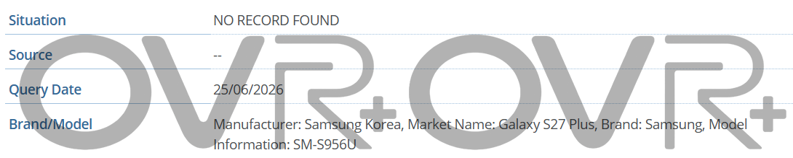

모델 정보
IT_Home의 보도에 따르면, OvrPlus가 GSMA 데이터베이스에서 아직 출시되지 않은 Samsung 기기 3종을 발견했습니다. 해당 모델은 SM-S956U, SM-S957B/DS, SM-S958U입니다.
이 중 SM-S956U는 Galaxy S27 Plus에 해당하며, SM-S958U는 Galaxy S27 Ultra에 대응합니다. 또한 SM-S957B/DS는 Galaxy S27 Pro로 명확하게 표기되었습니다.
라인업 구성
모델명 SM-S952U 역시 GSMA 데이터베이스에서 Galaxy S27이라는 이름으로 등장한 바 있습니다. 이를 통해 Samsung이 내년 초에 출시할 예정인 네 가지 Galaxy S27 시리즈 스마트폰 소식이 사실상 확인되었습니다.
이는 S27 Pro가 해당 시리즈의 새로운 네 번째 모델이 됨을 의미하며, S27, S27+, S27 Ultra와 함께 내년 상반기 Galaxy 플래그십 라인업을 구성하게 됩니다. 또한 Samsung은 2027년 후반에 Galaxy S27 FE를 출시할 가능성이 있습니다.
역사 및 특징
Samsung Galaxy 시리즈는 2010년 출시 이후 명명 규칙이 여러 차례 조정되었으며, 과거에도 Pro 버전의 기종을 출시한 적이 있습니다. 다만 당시의 사례(Galaxy Pro, Galaxy Note Pro, XCover6 Pro, J7 Pro, Grand Pro, A9 Pro 등)는 스마트폰이 아니었습니다.
이번에 추가되는 S27 Pro는 기능과 사양 면에서 S27 Ultra와 매우 유사하지만 본체가 더욱 콤팩트한 것이 특징입니다. 이 모델은 S27 Ultra의 핵심 기능을 유지하면서 S Pen을 제외한 형태로 포지셔닝될 예정입니다.
디스플레이 및 카메라
Samsung Galaxy S27 Pro는 6.47인치 Dynamic AMOLED 2x 디스플레이를 탑재할 것으로 보입니다.
카메라 사양은 다음과 같습니다.
- 전면: 1,200만 화소
- 후면 메인: 2억 화소
- 후면 초광각: 5,000만 화소 (자동 초점 지원)
- 후면 망원: 5,000만 화소 (3.5배 광학 줌 지원)
성능 및 배터리
핵심 사양은 다음과 같이 예상됩니다.
- 프로세서: Snapdragon 8 Elite Gen 6 Pro for Galaxy
- 메모리: 12GB 이상
- 저장공간: 256GB 이상 (UFS 5.0)
- 배터리: 5,000mAh
- 충전: 45W 이상의 고속충전 지원
총평
Samsung은 내년 상반기 Galaxy S27 시리즈에 S Pen이 제외된 컴팩트한 사양의 'Pro' 모델을 추가하여 총 4종의 플래그십 라인업을 구성할 예정입니다. 해당 모델은 고성능 프로세서와 대용량 배터리, 그리고 강력한 멀티 카메라 시스템을 탑재하며 기존 Ultra 모델과 유사한 성능을 제공할 것으로 보입니다.
Galaxy S27 系列机型确认
根据 GSMA 数据库的最新信息，Samsung 已计划在明年初推出包含四款机型的 Galaxy S27 系列。其中，SM-S957B/DS 被明确标注为全新的 Galaxy S27 Pro 机型。
- SM-S956U：Galaxy S27 Plus
- SM-S958U：Galaxy S27 Ultra
- SM-S957B/DS：Galaxy S27 Pro
- SM-S952U：Galaxy S27
Galaxy S27 Pro 定位与设计
Galaxy S27 Pro 被定位为功能与 Galaxy S27 Ultra 高度接近，但机身更为紧凑的型号。该机型将配备 6.47 英寸 Dynamic AMOLED 2x 屏幕，且不配备 S Pen。
Galaxy S27 Pro 核心参数
根据目前爆料，Galaxy S27 Pro 的硬件与影像配置如下：
- 处理器：骁龙 8 Elite Gen 6 Pro for Galaxy
- 内存/存储：12GB 或以上 RAM，256GB 或以上 UFS 5.0 存储
- 电池/充电：5000mAh 电池，支持 45W 或更高功率快充
- 前置摄像头：1200 万像素
- 后置镜头组：2 亿像素主摄、5000 万像素超广角（支持自动对焦）、5000 万像素长焦（支持 3.5 倍光学变焦）
总结
Samsung 将在明年的旗舰阵容中新增 Galaxy S27 Pro 机型，作为一款去除了 S Pen 但保留了 Ultra 级核心配置的紧凑型旗舰。该系列预计将由 S27、S27+、S27 Ultra 及全新的 S27 Pro 四款机型组成。
モデル情報
IT_Homeの報道によると、OvrPlusがGSMAデータベースから未発売のSamsungデバイス3機種（SM-S956U、SM-S957B/DS、SM-S958U）を発見しました。これらのモデルはそれぞれGalaxy S27 Plus、Galaxy S27 Pro、およびGalaxy S27 Ultraに対応しています。
ラインアップ構成
GSMAデータベースには「SM-S952U」というモデル名もGalaxy S27として登場しており、これによりSamsungが来年初頭にリリース予定の4機種のGalaxy S27シリーズのラインアップが事実上確認されました。
これは、S27 Proが同シリーズの新たな第4のモデルとなることを意味しており、S27、S27+、S27 Ultraとともに来年上半期のGalaxyフラッグシップラインアップを構成します。また、Samsungは2027年後半にGalaxy S27 FEをリリースする可能性があります。
歴史と特徴
Samsung Galaxyシリーズは2010年の発売以来、命名規則が何度か変更されており、過去にも「Pro」モデルをリリースしたことがあります。しかし、当時の事例（Galaxy Pro、Galaxy Note Pro、XCover6 Pro、J7 Pro、Grand Pro、A9 Proなど）はスマートフォンではありませんでした。
今回追加されるS27 Proは、機能やスペックの面ではS27 Ultraと非常に似ていますが、本体がよりコンパクトであることが特徴です。このモデルはS27 Ultraの主要な機能を維持しつつ、S Penを除外した構成として位置づけられる予定です。
ディスプレイとカメラ
Samsung Galaxy S27 Proには、6.47インチのDynamic AMOLED 2xディスプレイが搭載される見込みです。
カメラの仕様は以下の通りです。
- フロント：1,200万画素
- リアメイン：2億画素
- リア超広角：5,000万画素（オートフォーカス対応）
- リア望遠：5,000万画素（3.5倍光学ズーム対応）
性能とバッテリー
主要なスペックは以下のように予想されます。
- プロセッサ：Snapdragon 8 Elite Gen 6 Pro for Galaxy
- メモリ：12GB以上
- ストレージ：256GB以上（UFS 5.0）
- バッテリー：5,000mAh
- 充電：45W以上の高速充電対応
総評
Samsungは来年上半期のGalaxy S27シリーズにおいて、S Penを除いたコンパクトな仕様の「Pro」モデルを追加し、計4機種のフラッグシップラインアップを展開する予定です。このモデルは高性能プロセッサと大容量バッテリー、そして強力なマルチカメラシステムを搭載し、既存のUltraモデルに近い性能を提供すると見られています。
まとめ
Samsungは来年、Galaxy S27シリーズにS27 Proを追加し、計4機種のフラッグシップラインアップを展開する見通しです。新設されるProモデルは、S27 Ultraと同等の高性能を維持しながらも、S Penを除いたコンパクトな設計が特徴となります。
Model Information
According to a report by IT_Home, OvrPlus discovered three unreleased Samsung devices in the GSMA database. The identified models are SM-S956U, SM-S957B/DS, and SM-S958U.
Among these, SM-S956U corresponds to the Galaxy S27 Plus, while SM-S958U identifies as the Galaxy S27 Ultra. Additionally, SM-S957B/DS has been clearly labeled as the Galaxy S27 Pro.
Lineup Configuration
The model name SM-S952U also appeared in the GSMA database under the name Galaxy S27. This confirms that Samsung will launch four different models in the Galaxy S27 series early next year.
The addition of the S27 Pro means it will join the S27, S27+, and S27 Ultra to form the flagship lineup for the first half of next year. Furthermore, there is a possibility that Samsung may release the Galaxy S27 FE in late 2027.
History and Features
Since its launch in 2010, the naming conventions of the Samsung Galaxy series have been adjusted several times, and "Pro" versions were released in the past. However, those previous instances (such as Galaxy Pro, Galaxy Note Pro, XCover6 Pro, J7 Pro, Grand Pro, and A9 Pro) were not smartphones.
The newly added S27 Pro is expected to have specifications very similar to the S27 Ultra but with a more compact body. This model will be positioned as a version that retains the core features of the S27 Ultra while excluding the S Pen.
Display and Camera
The Samsung Galaxy S27 Pro is expected to feature a 6.47-inch Dynamic AMOLED 2x display.
The camera specifications are as follows:
- Front: 12MP
- Rear Main: 200MP
- Rear Ultrawide: 50MP (with autofocus support)
- Rear Telephoto: 50MP (supporting 3.5x optical zoom)
Performance and Battery
The core specifications are expected as follows:
- Processor: Snapdragon 8 Elite Gen 6 Pro for Galaxy
- Memory: 12GB or more
- Storage: 256GB or more (UFS 5.0)
- Battery: 5,000mAh
- Charging: Support for high-speed charging of 45W or higher
Summary
Samsung is expected to launch a four-model flagship lineup for the Galaxy S27 series in the first half of next year, including a compact "Pro" model that excludes the S Pen. This Pro model will offer high performance, a large battery, and a powerful multi-camera system similar to the Ultra version.


